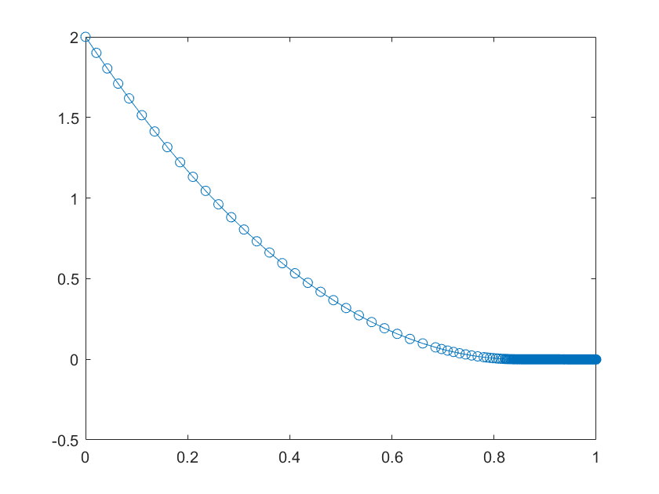

Contents
%%%%%%%%%%%%%%%%%%%%%%%%%%%%%%%%%%%%%%%%%%%%%%%%%%%%%%%%%%%%%%%%%%%%%%%%%%% % Exercise 6 TTK4130 Helene Hogstad Fossum % %%%%%%%%%%%%%%%%%%%%%%%%%%%%%%%%%%%%%%%%%%%%%%%%%%%%%%%%%%%%%%%%%%%%%%%%%%%
PROBLEM 4C
Parameters
rho = 1000; % [kg/m^3] A = 4.5; % [m^2] g = 10; % [m/s^2] C_v = 0.15; % [m^3/(s*sqrt(Pa))] The valve constant h_0 = 2; % [m] Initial value f = @(t,h)(-C_v/A)*sqrt(rho*g*h); % The function for dh/dt tspan = [0 1]; % The time span we want to simulate % Solving [t,h] = ode45(f,tspan,h_0); % % Plot plot(t,h,'o-');
Warning: Imaginary parts of complex X and/or Y arguments ignored
Comments
The steplengths decrases as h approaches 0 as we would expect judging from Problem 4b.